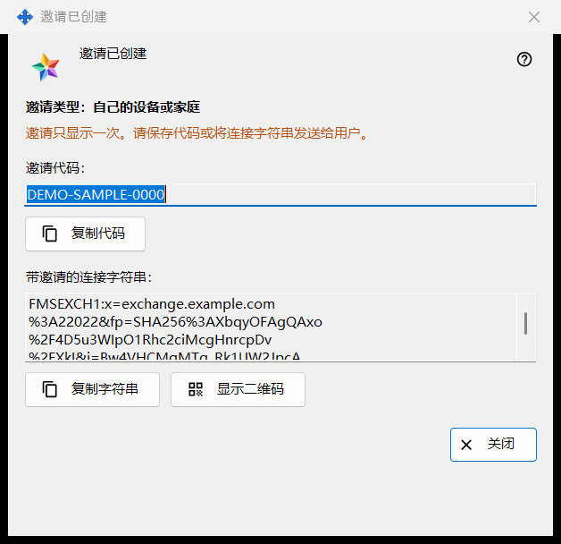
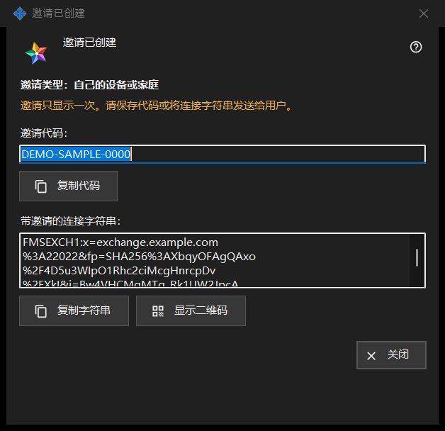

邀请已创建
用途说明
此窗口在「创建邀请」窗口中点击「创建」后立即显示新邀请，且只显示一次。其中有一次性代码；如果交换服务器程序能够生成，还有一条已包含该代码的连接字符串。


操作顺序
- 检查「邀请类型：..」这一行。
- 点击「复制代码」，或点击「复制字符串」复制带邀请的字符串，或点击「显示二维码」。
- 通过你信任的渠道把它交给对方。
- 点击「关闭」。同一代码不会再次显示。
界面元素
类型与警告
粗体行「邀请类型：自己的设备或家庭」指明你选择的类型。警告色的一行写着：「邀请只显示一次。请保存代码或将连接字符串发送给用户。」窗口关闭时，代码和字符串会从中清除。如果其中之一丢失，请在列表中撤回该邀请并创建新的。
邀请代码
「邀请代码：」在只读框中显示代码。「复制代码」把它作为机密复制，不进入 Windows 剪贴板历史记录（Win+V）和云剪贴板，下方一行会显示「邀请代码已复制到剪贴板。」或「无法将代码复制到剪贴板。」
带邀请的连接字符串
「带邀请的连接字符串：」仅在字符串能够生成时出现。它指明服务器并携带代码，所以请像对待代码一样对待它：「复制字符串」同样把它作为机密复制。其中不含你的账户密码。
二维码
「显示二维码」会打开带邀请的字符串的图片。任何看到它的人都可以使用该邀请，因此只向预定的接收者展示。如果无法生成图片，该行会显示「QR 码当前不可用。」
对方要做什么
在交换账户窗口（「登录..」）中，对方用「粘贴」粘贴字符串，或打开保存的文件。携带邀请的字符串会使窗口切换到注册：对方选择登录名，两次输入密码，然后点击「创建账户」。错误的或已使用过的邀请，以及已被占用的登录名，都会被拒绝并给出提示。
关闭
「关闭」会结束窗口并清除其中的代码和字符串。这里不会保存其他任何内容。